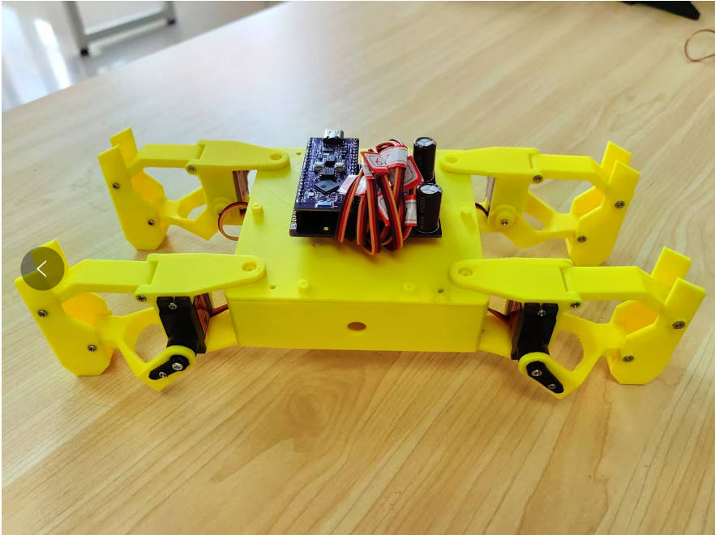
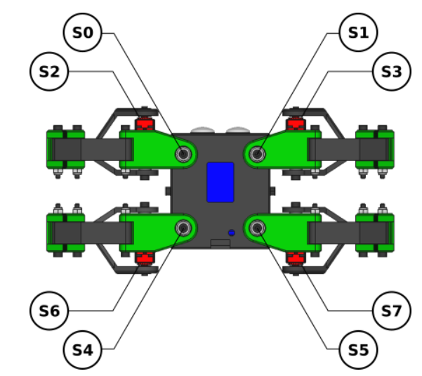
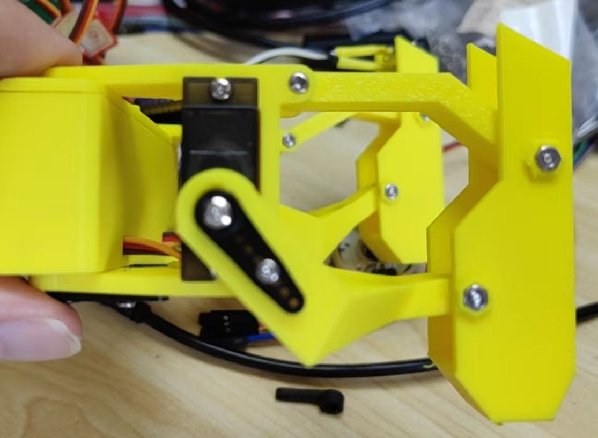
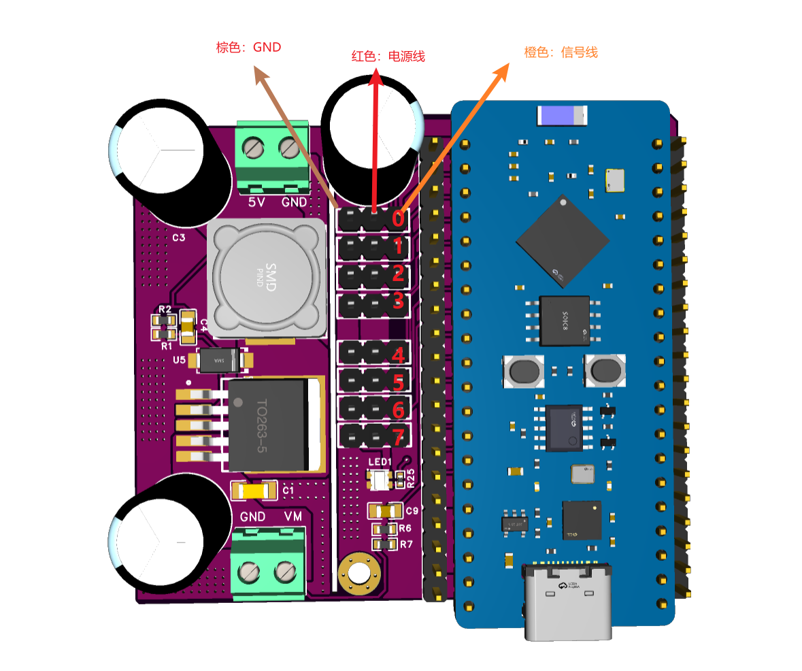
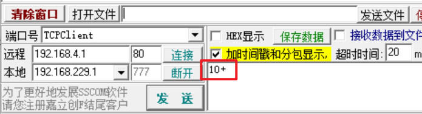

<!DOCTYPE lake>
<p data-lake-id="ud0c388e3" id="ud0c388e3" style="text-align: center"></p><a class="yuque-card-link" href="https://player.bilibili.com/player.html?bvid=BV13G5NzDESk&amp;autoplay=0" rel="noopener noreferrer" target="_blank">thirdparty：thirdparty</a><p data-lake-id="ucbab4147" id="ucbab4147"><br/></p><h2 data-lake-id="nobOU" id="nobOU"><span data-lake-id="uf7e98ae6" id="uf7e98ae6">安装说明</span></h2><p data-lake-id="u86c2090a" id="u86c2090a"><span data-lake-id="u829acdb4" id="u829acdb4">在开始安装之前，需要先用代码将所有</span><strong><span data-lake-id="uf81e3024" id="uf81e3024">舵机转动到90度</span></strong><span data-lake-id="u6a5a40b3" id="u6a5a40b3">。在没有安装好舵盘之前，</span><strong><span data-lake-id="u29157843" id="u29157843">切记不要手欠</span></strong><span data-lake-id="u7bb36773" id="u7bb36773">去转动舵机转轴</span></p><h3 data-lake-id="Kkq5f" id="Kkq5f"><span data-lake-id="u93c6aea0" id="u93c6aea0">俯视图</span></h3><p data-lake-id="ufc320831" id="ufc320831" style="text-align: center"></p><h3 data-lake-id="ImxYc" id="ImxYc"><span data-lake-id="u24661bfc" id="u24661bfc">侧视图</span></h3><p data-lake-id="u7fa0a6bd" id="u7fa0a6bd" style="text-align: center"></p><h3 data-lake-id="olUsg" id="olUsg"><span data-lake-id="ud36e6933" id="ud36e6933">接线图</span></h3><p data-lake-id="ucf4527d3" id="ucf4527d3"></p><h2 data-lake-id="VxYcb" id="VxYcb"><span data-lake-id="u7bc64d7a" id="u7bc64d7a">烧录代码</span></h2><h3 data-lake-id="ntwNM" id="ntwNM"><span data-lake-id="ueb3e3f70" id="ueb3e3f70">烧录固件</span></h3><p data-lake-id="uf4a46dc0" id="uf4a46dc0"><strong><span class="lake-fontsize-11" data-lake-id="ud36337d6" id="ud36337d6">flashdownload工具</span></strong><span class="lake-fontsize-11" data-lake-id="u21d3c247" id="u21d3c247">这个工具是用来将代码烧录到芯片中的，一般由芯片原厂提供</span></p><p data-lake-id="uf2d92daa" id="uf2d92daa"><span class="lake-fontsize-11" data-lake-id="ufc5eef9e" id="ufc5eef9e">单击下面得链接下载esp32固件下载工具</span></p><p data-lake-id="ubfed9ae6" id="ubfed9ae6"><a data-lake-id="u75a25b46" href="https://www.espressif.com.cn/zh-hans/support/download/other-tools?keys=&amp;field_type_tid%5B%5D=842" id="u75a25b46" rel="noopener noreferrer" target="_blank"><span data-lake-id="u36972a09" id="u36972a09">https://www.espressif.com.cn/zh-hans/support/download/other-tools?keys=&amp;field_type_tid%5B%5D=842</span></a></p><p data-lake-id="u1f535bc4" id="u1f535bc4"><span data-lake-id="u21662e0c" id="u21662e0c">​</span><br/></p><p data-lake-id="ua2f54626" id="ua2f54626"><span data-lake-id="u67c2c9cb" id="u67c2c9cb">弹出下面这个框之后，选择esp32s3芯片</span></p><p data-lake-id="ua9f9e38c" id="ua9f9e38c" style="text-align: center"></p><p data-lake-id="uc040dced" id="uc040dced"><span data-lake-id="u22e470c2" id="u22e470c2">在下面这个框这里，选择我们要下载的固件，固件下载在下一个小结</span></p><p data-lake-id="u659506d0" id="u659506d0" style="text-align: center"></p><h3 data-lake-id="leX9E" id="leX9E"><span data-lake-id="u26563636" id="u26563636">上传代码</span></h3><p data-lake-id="u4e9abe74" id="u4e9abe74"><span data-lake-id="u5af5fbd9" id="u5af5fbd9">使用Thonny工具，将下面这个main.py上传到单片机中</span></p><span class="yuque-card-unsupported">[codeblock]</span><p data-lake-id="ub32ecd71" id="ub32ecd71"><br/></p><p data-lake-id="uf0f4ba5c" id="uf0f4ba5c"><br/></p><p data-lake-id="u1a73a435" id="u1a73a435"><br/></p><h2 data-lake-id="zxhoN" id="zxhoN"><span data-lake-id="ua72d529f" id="ua72d529f">调试</span></h2><h3 data-lake-id="KIJd0" data-lake-index-type="2" id="KIJd0"><span data-lake-id="u2c324887" id="u2c324887">连接热点icheima_kame</span></h3><p data-lake-id="udd394831" id="udd394831"><span data-lake-id="u8c4ed78c" id="u8c4ed78c">要想与Esp32进行通信我们首先得让我们的电脑和ESP32处于相同的局域网中，打开电脑wifi搜索，找到icheima_kame,无需输入密码即可连接成功。</span></p><h3 data-lake-id="rYM48" data-lake-index-type="2" id="rYM48"><span data-lake-id="u580d8a45" id="u580d8a45">发送命令</span></h3><p data-lake-id="u365bd868" id="u365bd868"><span data-lake-id="ub538c041" id="ub538c041">打开串口调试工具，连接到esp32，然后发送对应的指令</span></p><p data-lake-id="u72e7a2cf" id="u72e7a2cf"></p><p data-lake-id="u21953b97" id="u21953b97"><span data-lake-id="u9274c434" id="u9274c434">参考指令如下：</span></p><table class="lake-table" data-lake-id="UTGOF" id="UTGOF" margin="true" style="width: 825px" width-mode="contain"><colgroup><col width="75"/><col width="75"/><col width="75"/><col width="75"/><col width="75"/><col width="75"/><col width="75"/><col width="75"/><col width="75"/><col width="75"/><col width="75"/></colgroup><tbody><tr data-lake-id="u54c832e6" id="u54c832e6"><td data-lake-id="ua2568993" id="ua2568993"><p data-lake-id="uff421ef4" id="uff421ef4"><span data-lake-id="u25728dec" id="u25728dec">     1</span></p></td><td data-lake-id="u0f91defa" id="u0f91defa"><p data-lake-id="u9a599d04" id="u9a599d04"><span data-lake-id="ue0718356" id="ue0718356">3</span></p></td><td data-lake-id="u10ae88d1" id="u10ae88d1"><p data-lake-id="u2890e263" id="u2890e263"><span data-lake-id="ufd5f81c5" id="ufd5f81c5">4</span></p></td><td data-lake-id="u8d4cecdc" id="u8d4cecdc"><p data-lake-id="ua25162d2" id="ua25162d2"><span data-lake-id="u6cfcd836" id="u6cfcd836">5</span></p></td><td data-lake-id="u0e7e6b5c" id="u0e7e6b5c"><p data-lake-id="u16537d35" id="u16537d35"><span data-lake-id="uf3f8423f" id="uf3f8423f">6</span></p></td><td data-lake-id="ufbd21ed1" id="ufbd21ed1"><p data-lake-id="u301f1001" id="u301f1001"><span data-lake-id="u7caaa091" id="u7caaa091">7</span></p></td><td data-lake-id="u1b6bceff" id="u1b6bceff"><p data-lake-id="u6635e014" id="u6635e014"><span data-lake-id="ueda96d15" id="ueda96d15">8</span></p></td><td data-lake-id="uc3d5b494" id="uc3d5b494"><p data-lake-id="u3406edbc" id="u3406edbc"><span data-lake-id="u9ddab360" id="u9ddab360">9</span></p></td><td data-lake-id="u42230e45" id="u42230e45"><p data-lake-id="ufaa42023" id="ufaa42023"><span data-lake-id="ub2fb53cd" id="ub2fb53cd">10</span></p></td><td data-lake-id="u07bda48a" id="u07bda48a"><p data-lake-id="u8b68c609" id="u8b68c609"><span data-lake-id="ue642e09e" id="ue642e09e">11</span></p></td><td data-lake-id="u3c771470" id="u3c771470"><p data-lake-id="uaa52593c" id="uaa52593c"><span data-lake-id="u27fefb71" id="u27fefb71">其它</span></p></td></tr><tr data-lake-id="u74dcecf0" id="u74dcecf0" style="height: 36px"><td data-lake-id="ufa601a9d" id="ufa601a9d"><p data-lake-id="u91f1e8e6" id="u91f1e8e6"><span data-lake-id="uef2363b6" id="uef2363b6">前进</span></p></td><td data-lake-id="u2d81455f" id="u2d81455f"><p data-lake-id="u5b7ee302" id="u5b7ee302"><span data-lake-id="udce4868e" id="udce4868e">左转</span></p></td><td data-lake-id="u17c1a176" id="u17c1a176"><p data-lake-id="u5c68febc" id="u5c68febc"><span data-lake-id="u11e0d0a8" id="u11e0d0a8">右转</span></p></td><td data-lake-id="ub8300e80" id="ub8300e80"><p data-lake-id="ub8cdc877" id="ub8cdc877"><span data-lake-id="ub71836d9" id="ub71836d9">停止</span></p></td><td data-lake-id="u7fcc9acc" id="u7fcc9acc"><p data-lake-id="u2a97157b" id="u2a97157b"><span data-lake-id="u0c684f84" id="u0c684f84">呼吸</span></p></td><td data-lake-id="u801cabe1" id="u801cabe1"><p data-lake-id="u65113a6a" id="u65113a6a"><span data-lake-id="u9a7689b6" id="u9a7689b6">上下</span></p></td><td data-lake-id="u6eb690f8" id="u6eb690f8"><p data-lake-id="ufb295d0f" id="ufb295d0f"><span data-lake-id="ub23529d2" id="ub23529d2">跳</span></p></td><td data-lake-id="u533d727b" id="u533d727b"><p data-lake-id="ubc16f0ef" id="ubc16f0ef"><span data-lake-id="u0f9d3f4a" id="u0f9d3f4a">你好</span></p></td><td data-lake-id="uef5150f6" id="uef5150f6"><p data-lake-id="u993908e4" id="u993908e4"><span data-lake-id="u3621dee1" id="u3621dee1">前蹦跶</span></p></td><td data-lake-id="u348a8390" id="u348a8390"><p data-lake-id="u8ef3879e" id="u8ef3879e"><span data-lake-id="uc78fb39e" id="uc78fb39e">跳舞</span></p></td><td data-lake-id="u21d6dae9" id="u21d6dae9"><p data-lake-id="u950a58b9" id="u950a58b9"><span data-lake-id="uc9fc5645" id="uc9fc5645">站立</span></p></td></tr></tbody></table><p data-lake-id="u5e6a8692" id="u5e6a8692"><br/></p><p data-lake-id="ubdf7036f" id="ubdf7036f"><span data-lake-id="uba692161" id="uba692161">参考工程：</span><a data-lake-id="u3e50aaef" href="https://github.com/JavierIH/miniKame" id="u3e50aaef" rel="noopener noreferrer" target="_blank"><span data-lake-id="ud5d71d86" id="ud5d71d86">https://github.com/JavierIH/miniKame</span></a></p><p data-lake-id="ud7b5a2d6" id="ud7b5a2d6"><span data-lake-id="u84b63e64" id="u84b63e64">​</span><br/></p><h2 data-lake-id="rUFry" id="rUFry"><span data-lake-id="ub43cd8fd" id="ub43cd8fd">​</span><br/></h2>